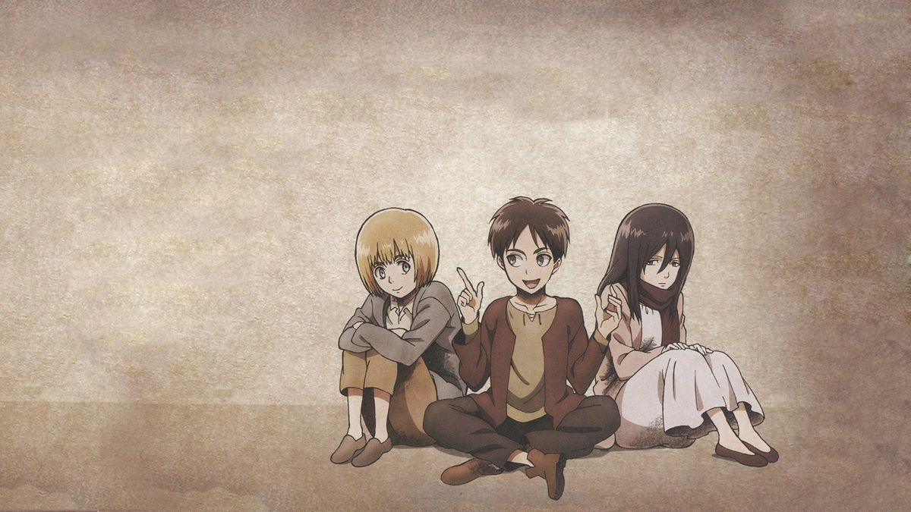
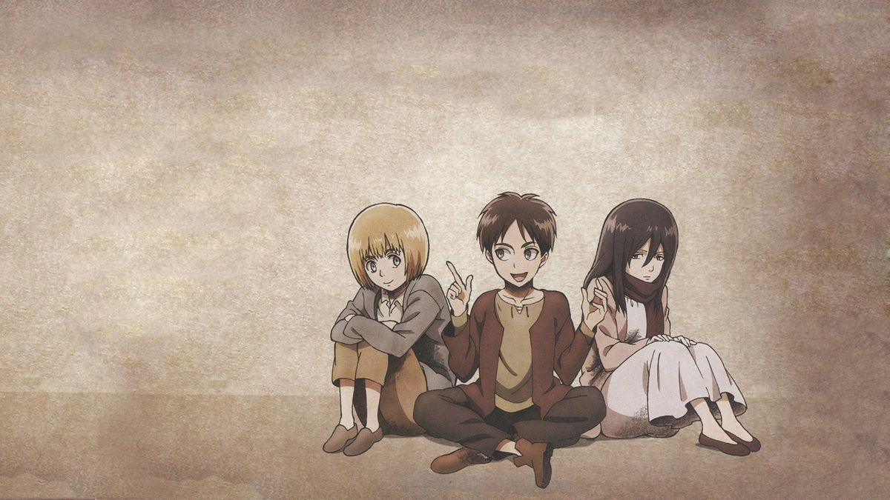

基本介紹
《進擊的巨人》的故事圍繞著一個被三道巨大城牆包圍的人類社會展開。
人類多年來一直生活在城牆內，原因是城牆外的世界充滿了食人的巨人。
某天，一個前所未見的超大型巨人突然出現，打破了原本的和平，也粉碎了人們一直以來的安全感。
從那一刻起，主角艾連與他的朋友三笠、阿爾敏決定加入調查兵團，踏上奪回世界的道路。
他們在戰鬥中逐漸接觸到關於巨人的真相、城牆的秘密，甚至是人類歷史深處的黑暗。
隨著劇情推進，故事不只是描寫人類與巨人的對抗 更深入探討戰爭、自由、人性、選擇與犧牲，讓整部作品充滿張力與深度。
歷史真相
原本以為的世界只是「城牆保護下的人類」；但真相揭開後，會發現世界的規模與敵意遠超想像。這種落差帶來強烈衝擊，也讓人重新思考「誰才是真正的敵人」。
自由與束縛
《進擊的巨人》讓我明白，自由不是離開城牆，而是能選擇自己想走的路。
那些角色望向牆外的瞬間，讓我感受到追求自由需要勇氣與代價。
世界觀與背景
故事發生在人類被三道巨大城牆包圍的世界中。牆內是人類所剩不多的安全地帶，牆外則充滿未知與巨大的威脅。整體氛圍壓迫、封閉，而人們對自由的渴望反而因此更加強烈。
巨人種類
巨人的外型與行動方式多樣，有的笨拙、有的快速且危險。牠們代表著人類無法理解的恐懼來源，也象徵故事中那份「未知壓迫」。
純潔巨人
數量最多、行動不可預測，是威脅最直接的存在。牠們的外觀詭異，也讓作品的壓迫感更強烈。
歷史與真相
用不爆雷或少爆雷的方式，說明「一開始以為的世界」和「看到真相後的世界」有什麼差異，重點放在你的感受。
九大巨人
具有特殊能力與智慧，是推動故事主線的重要力量。每一位繼承者都對世界有不同的影響。
超大型巨人
體型巨大、破壞力驚人，是整部作品最具象徵性的威脅之一。
城牆結構與生活
三道城牆分層保護著人類。越靠外的城牆生活較貼近危險，而內圈則較富裕、安全。但在城牆裡生活，也意味著一生都看不到真正的世界，宛如被保護、同時也被限制的鳥籠。
瑪利亞之牆
最外層的城牆，農業區最多、人類活動最廣。因為最貼近外界，也最常面臨未知威脅。
羅塞之牆
第二層城牆，是人類主要的居住範圍。安全性較高，但也因人口密集而充滿壓力。
希娜之牆
最內層的城牆，象徵權力與 privilege。高階階層居住於此，與外界的恐懼距離最遠。
主要角色介紹


 

艾連・葉卡
艾連從小具有強烈的自由意志，他不願意被困在城牆的世界中，認為「活著不是被關在籠子裡」。
隨著故事推展，他的選擇變得更加沉重，也背負起人類存亡的責任。
他的成長充滿矛盾、猶豫與覺醒，是整部作品最具衝突與深度的角色之一。
隨著劇情推進，他越來越清楚自由的代價，也開始背負整個世界的重量。
三笠・阿克曼

因兒時事件失去雙親，被艾連一家收留，因此艾連對她而言是家庭、是依靠。
表面冷靜沉著、戰鬥天賦極高，被稱為「人類最強女性」之一。
她的內心其實很敏感、很溫柔，只是將脆弱全部藏起來。
她與艾連的關係是作品中最沉重也最重要的一條情感線。
三笠象徵：「強大外殼下，被愛與羈絆束縛的心」。
阿爾敏・亞魯雷特
身體素質普通，但擁有超越同齡人的判斷力、推理能力與宏觀視野。
他常常用邏輯突破困境，用想法拯救同伴。
阿爾敏最大的力量不是天生，而是「願意面對恐懼的勇氣」。
他象徵作品中的人性光點：
在混亂與殘酷中仍選擇相信更好的未來。
里維・阿克曼

調查兵團的象徵性人物，也是「人類最強士兵」。
對於部下與團長有深厚的責任感，他的冷酷其實是一種「保護」。
名場面非常多，深受觀眾喜愛，被視為整部作品的精神支柱之一。
里維象徵：「即使世界殘破，仍維持信念與行動的人」
亞妮·雷恩哈特
第104期訓練軍團第4名畢業，擁有強大的格鬥術，在格鬥能力方面無人能及。
性格過於孤僻，自己喜歡獨立行動
能在單獨的任務中發揮強大力量
在組織內行動反而會被埋沒，成為毫無長處的士兵
將任務交給她的時候應該仔細斟酌任務的內容。
音樂賞析
紅蓮の弓矢
Call of Silence
悪魔の子
心臓を捧げよ！